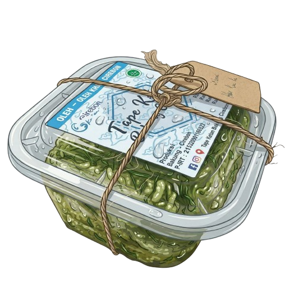
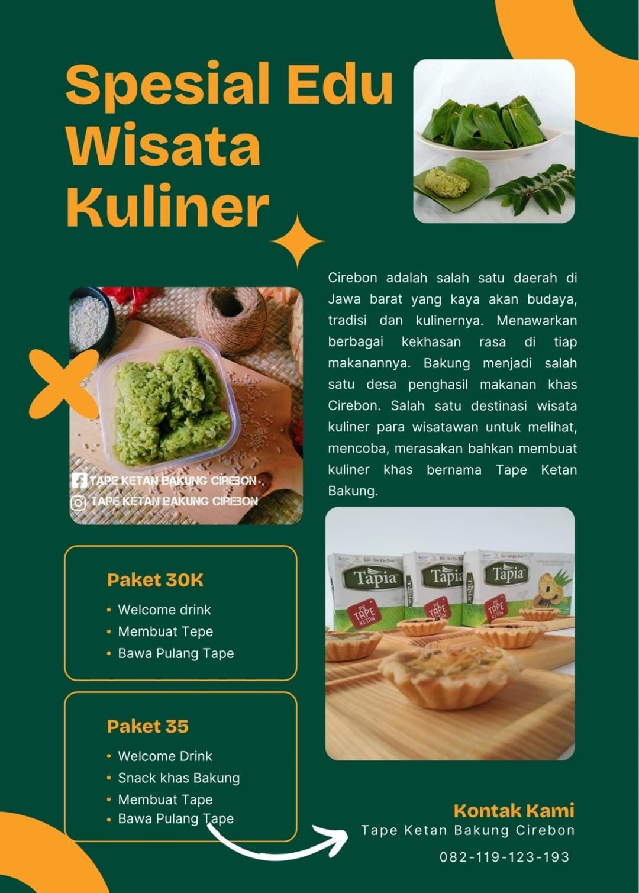
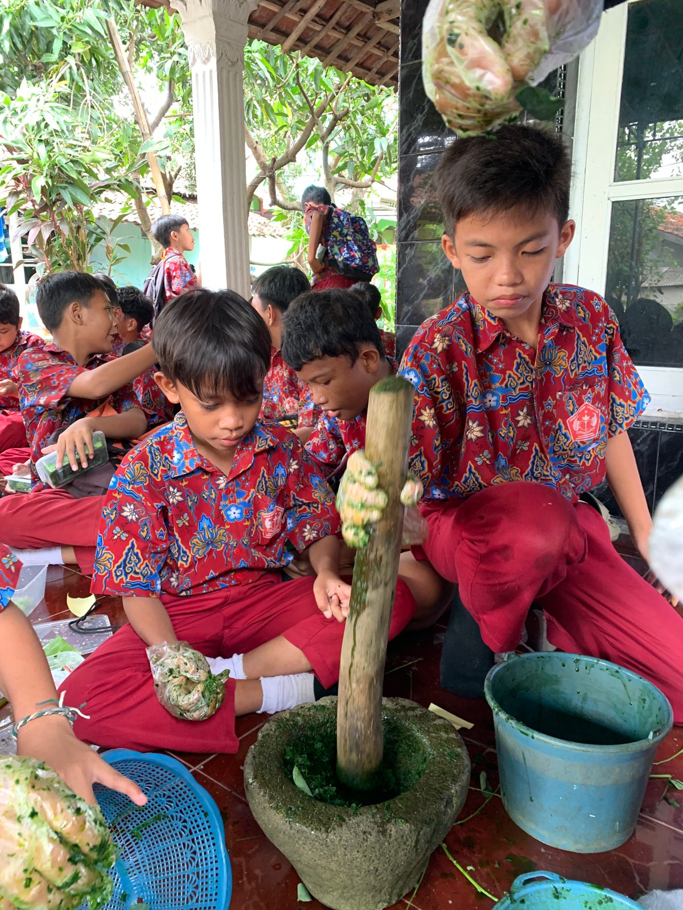
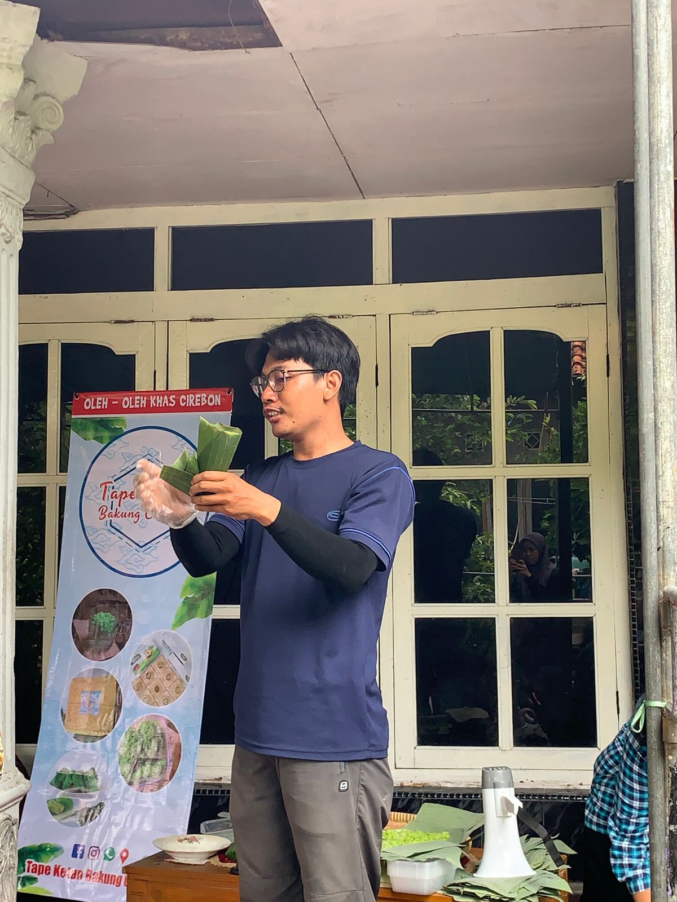

P-IRT
Pangan Industri Rumah Tangga yang menjamin keamanan produk makanan dari pengelolaan industri rumahan secara resmi.
LihatTape Ketan Bakung adalah kuliner fermentasi tradisional khas Cirebon yang telah diwariskan turun-temurun. Terbuat dari beras ketan pilihan yang dipadukan dengan daun katuk (Sauropus androgynus), menghasilkan cita rasa manis-asam yang khas dengan aroma fermentasi yang menggugah selera.
Dibuat dengan proses fermentasi alami tanpa pengawet buatan, Tape Ketan Bakung hadir sebagai pangan lokal fungsional yang memadukan kearifan tradisi dengan nilai gizi tinggi — menjadikannya lebih dari sekadar camilan, tetapi warisan budaya Cirebon yang patut dilestarikan.

Lebih dari sekadar camilan — setiap gigitan mengandung nutrisi alami hasil fermentasi tradisional khas Cirebon.
Kandungan: Bakteri asam laktat & ragi (Saccharomyces cerevisiae) dari proses fermentasi.
Sangat baik untuk kesehatan pencernaan. Probiotik membantu menyeimbangkan mikrobioma usus, melancarkan buang air besar, dan meningkatkan sistem kekebalan tubuh secara alami.
Kandungan: Gula sederhana (glukosa & maltosa) hasil pemecahan karbohidrat kompleks oleh ragi.
Karena strukturnya telah dipecah oleh fermentasi, tubuh dapat menyerap energi jauh lebih cepat. Cocok untuk memulihkan stamina dan memberikan dorongan energi instan.
Kandungan: Kadar Vitamin B1 (Tiamin) meningkat signifikan selama fermentasi dibanding ketan biasa.
Vitamin B1 vital untuk kesehatan sistem saraf, metabolisme karbohidrat menjadi energi, serta mendukung fungsi otot dan jantung agar tetap optimal.
Kandungan: Fermentasi menurunkan asam fitat sehingga penyerapan mineral oleh tubuh meningkat (bioavailabilitas tinggi).
Zat besi mencegah anemia dengan mendukung produksi sel darah merah. Kalsium berperan penting dalam memelihara kepadatan dan kesehatan tulang.
Kami berkomitmen untuk menyajikan produk yang tidak hanya lezat, tetapi juga aman dan terjamin. Seluruh proses produksi kami telah memenuhi standar legalitas dan sertifikasi resmi dari lembaga terkait..
Pangan Industri Rumah Tangga yang menjamin keamanan produk makanan dari pengelolaan industri rumahan secara resmi.
LihatNomor Induk Berusaha sebagai legalitas dan identitas resmi pelaku usaha dalam menjalankan proses produksi makanan ini.
LihatSertifikasi Halal resmi yang memastikan bahwa produk Tape Bakung diproduksi sesuai dengan syariat agama dan aman konsumsi.
LihatSertifikasi standar keunggulan (Cleanliness, Health, Safety, and Environmental Sustainability) untuk pengelolaan bersih dan aman.
LihatProduksi olahan beras ketan khas Cirebon dengan kualitas terbaik, rasa manis alami, dan kesegaran yang terjaga.
LihatDestinasi wisata kuliner yang mana para wisatawan dapat merasakan langsung experience untuk melihat, merasakan, mencoba bahkan membuat secara langsung kuliner khas cirebon bernama tape ketan bakung.

Tape Ketan Bakung


Punya pertanyaan atau ingin memesan? Isi form di samping dan pesan Anda akan langsung dikirim ke email kami.